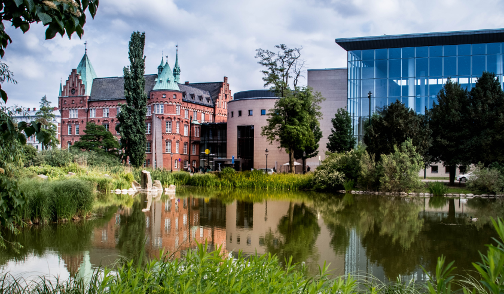

Malmö
Central
Library
Research
Jan 2026 - May 2026
Goal
Our goal, as conducted in a team, was to work with our client, who were the Malmö Central Library. We worked closely with the upper management of the organization as well as with librarians from the Garget library. Our task, as defined by the library, was to investigate how we could potentially improve their methods of collecting information about the general experiences and backgrounds of library visitors. This research was necessary to help Malmö’s libraries better adapt to their evolving roles in a rapidly changing society, and to ensure they continue meeting the needs of both their visitors and the broader community.
Approach
Our approach began with ideation to identify the most effective way to address the library's research needs, which led us to develop a toolbox concept—a practical framework designed to help librarians quickly understand visitor needs and community expectations. To communicate and refine this concept, we created storyboard sketches that visualized the key steps and workflows within the toolbox. We then conducted community mapping around the Garget library, exploring the neighborhood dynamics and gathering insights through interviews with local residents about their library needs

Ideation
This process involved us juggling multiple ideas involving what we needed to do with Malmö central library. We eventually focused in on this idea of a toolbox, which could allow librarians to quickly understand the needs of visitors and local community
Sketching
We developed a story board sketch which allowed us to better visualize the steps inside our toolbox. It also allowed us to more easily communicate our concept of a toolbox to our clients, in order to develop it into an actual set of tools for librarians to use.

Mapping
In addition to developing the toolbox, we also wanted to look into the area and have a perception of the community that surrounds the Garget library. This would help situate ourselves to the average visitor of the library, but would also allow us to potentially approach and interview the locals to further understand their needs or wants for the library. We also were able to gather map data of the area from Malmö stad, which helped in mapping the area and providing the accompanying visual to the left.

Qualitative data
Our team mainly focused on gathering qualitative data, as we had already plenty of existing quantitative data thanks to the efforts of both the Central Library and also Malmö stad. what we needed for our research was more of the perspective of the visitors, and additionally that of the librarians. We mainly conducted our qualitative research through interviews, as well as participatory card games which we would eventually integrate into our tool box.

Prototyping
The toolbox itself, was an iterative process, and as previously mentioned included, various methods including specific steps needed to help librarians to quickly understand the needs of visitors and the community. As represented in the circle, the ideas flow out-to-in, as previous steps may be necessary to build up to the next. The card game being another developmental point, with it being a series of writable cards, in which participants could place their issues, and struggles with the library, and for the next person to solve them. The next participant after this however has to deconstruct their ideas to what the issue was in the first place, until an end briefing.
Outcome
Through our research and collaborative process, we developed a comprehensive toolbox that equips librarians with practical methods to systematically gather and understand visitor experiences and community needs. Rather than providing direct insights about visitors themselves, our toolbox empowers librarians as researchers, giving them structured approaches and tools including the participatory card game to research how their services can better serve their communities.

Example photo from interview
Tools & Presentation
We presented our findings and the toolbox through both a formal presentation and an accompanying video, which were received positively by the library's management and staff. next phase involves testing the toolbox in practice to measure its effectiveness and gather feedback on how well it performs as a research instrument for the librarians.
This iterative evaluation will be crucial in refining the tools and ensuring they truly enable librarians to gain the insights necessary to support Malmö's libraries in their evolving role within the community.